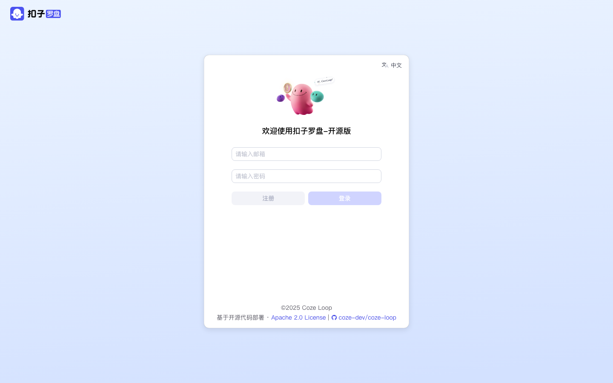
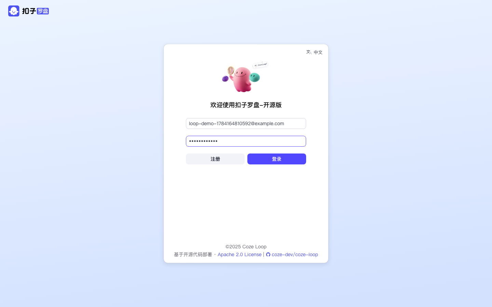
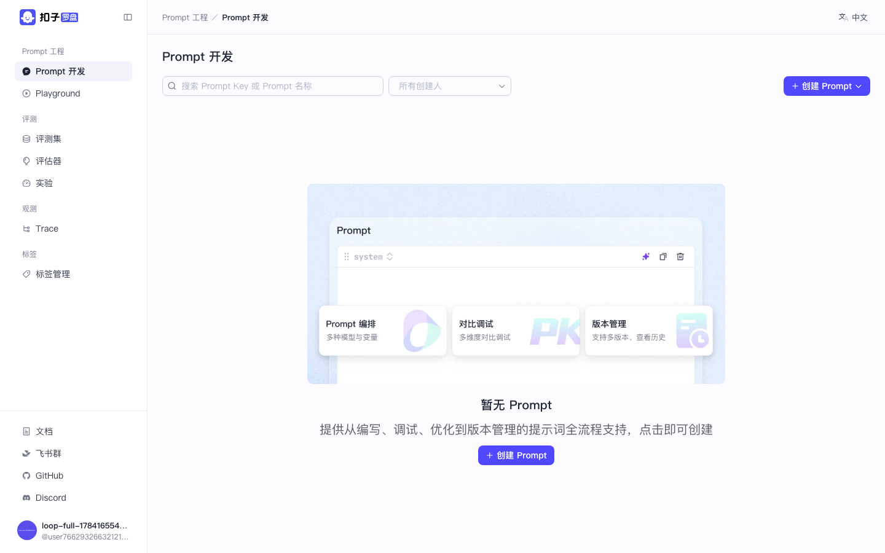
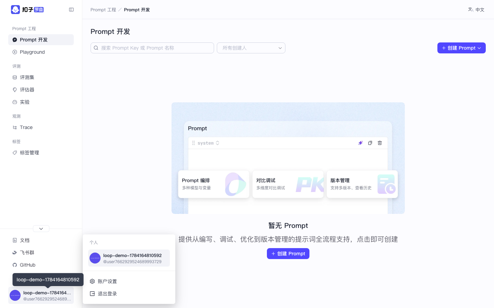
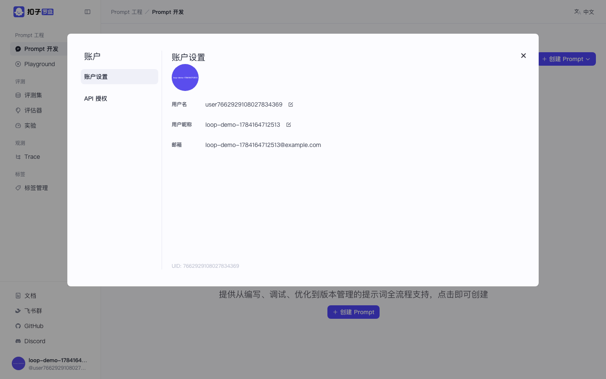

界面实录

图：登录 / 注册页 /auth/login

图：填写邮箱与密码

图：注册成功后进入 Prompt 开发首页
图：左侧导航：Prompt / 评测 / 观测 / 标签

图：右下角用户菜单

图：账号设置弹窗
操作步骤
启动服务
在 coze-loop 仓库根目录执行 make compose-up，浏览器打开 http://localhost:8082。若本机 8888 已被占用（例如同时跑 Coze Studio），把 release/deployment/docker-compose/.env 里的 COZE_LOOP_APP_OPENAPI_PORT 改成 8889。
配置模型（跑 Prompt / 实验前必做）
编辑 release/deployment/docker-compose/conf/model_config.yaml。本教程实录使用 Claude：
protocol: claude，api_key 填 Anthropic Key，model 如 claude-sonnet-4-5，参考同目录 model_config_example/claude.yaml。
改完执行 docker compose ... restart app（或 make compose-restart-app）。开源版没有「模型管理」UI。
注意：Claude 新模型不允许同时传 temperature 与 top_p——param_schemas 里只保留其中一个，否则调试会 400。
注册 / 登录
进入 /auth/login，用邮箱+密码注册；注册成功会自动进入 Personal Space。
认识侧栏
四大模块：Prompt 工程（开发 / Playground）、评测（评测集 / 评估器 / 实验）、观测（Trace）、标签。底部有文档 / GitHub 外链与账号入口。
docker compose up -d。